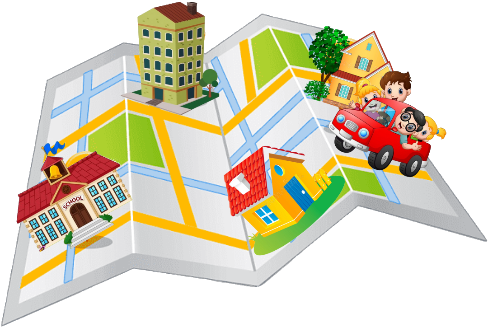

<ion-header [translucent]="true">
  <ion-toolbar>
    <ion-title> Início </ion-title>
  </ion-toolbar>
</ion-header>

<ion-content [fullscreen]="true">
  <ion-header collapse="condense">
    <ion-toolbar>
      <ion-title size="large">Início</ion-title>
    </ion-toolbar>
  </ion-header>
  
  <ion-card [routerLink]="['/tabs/tab2']">
    <ion-item>
      <ion-thumbnail slot="start">
        <ion-icon name="calendar"></ion-icon>
      </ion-thumbnail>
      <ion-label>Minhas Viagens</ion-label>
    </ion-item>
  </ion-card>
</ion-content>
